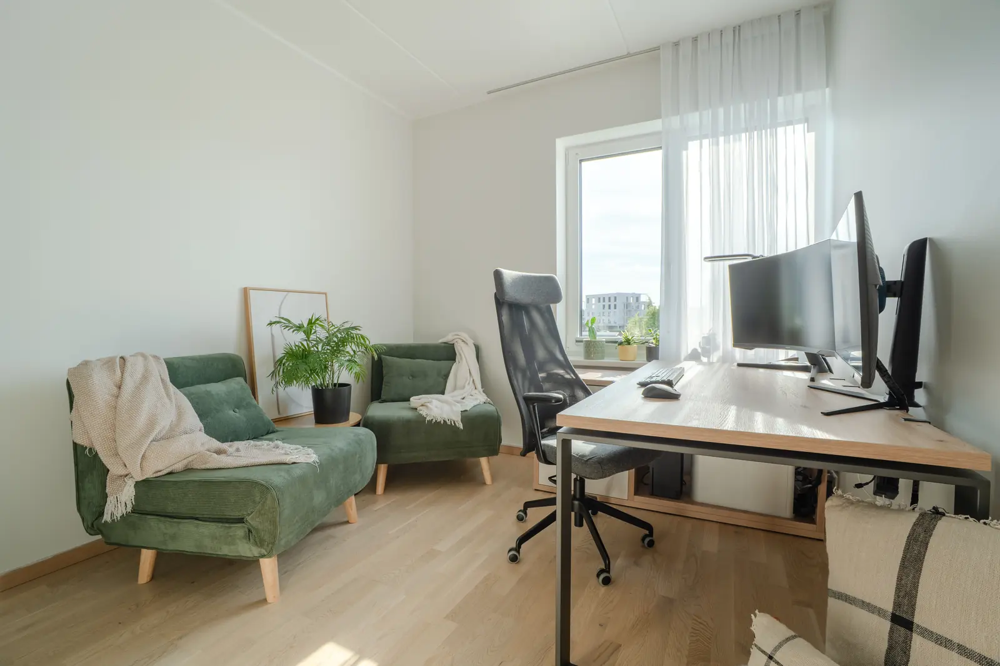
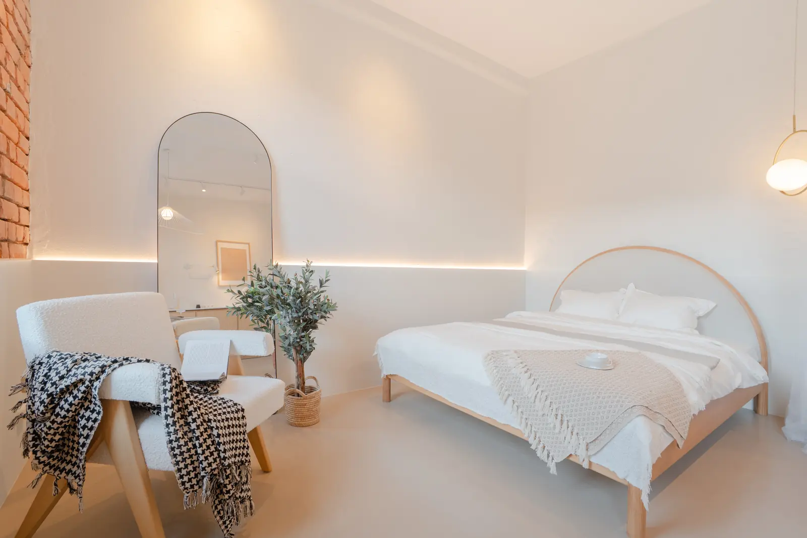
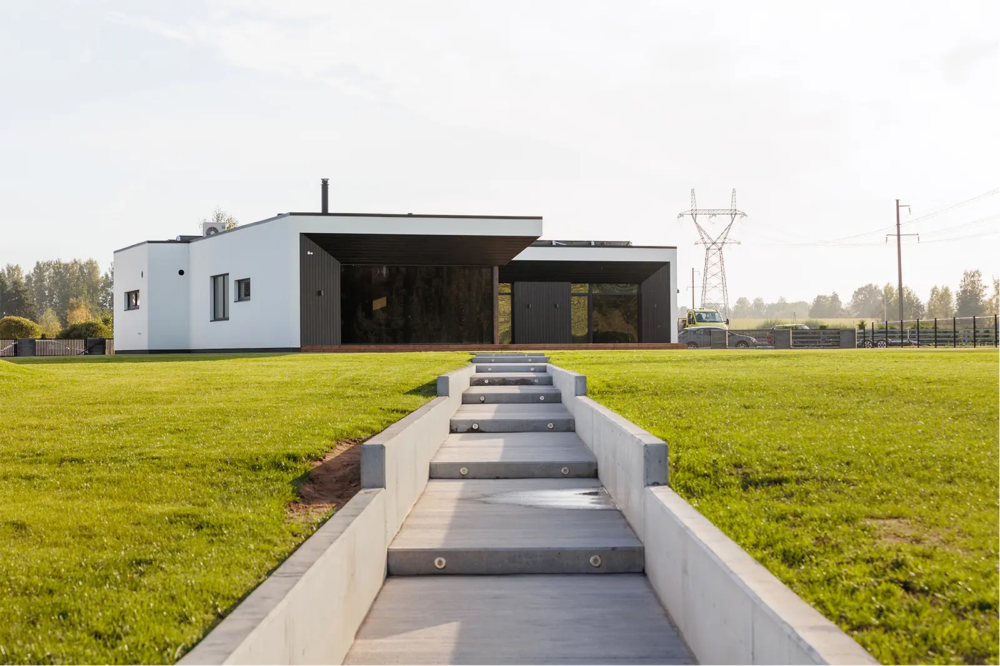

Kodu müügiks ettevalmistamine: ruumipõhine kontrollnimekiri
Lühivastus
Ettevalmistus tähendab kolme asja: vähem asju pindadel, rohkem valgust, ja kõik isiklik ära peidetud. Ühe õhtuga jõuab kõik olulise ära teha ja see mõjutab fotot rohkem kui ükski kaamera.
Kõige sagedasem küsimus, mille pildistamise kokkuleppimisel saame, on: „Kas ma pean midagi ette valmistama?“ Vastus on jah – ja see on kõige tasuvam pool tundi kogu müügiprotsessis.
Fotograaf saab parandada valgust, perspektiivi ja värve. Ta ei saa kaadrist ära võtta nõudekuivatit ega segamini voodit. Siin on nimekiri, mille saab läbi käia ühe õhtuga.
Kõik ruumid, üldreeglid
- Tõsta pindadelt ära kõik, mida seal iga päev ei peaks olema: laadijad, pudelid, paberid.
- Puhasta aknad. Fotol on nad suur valgusallikas ja plekid paistavad pildil rohkem välja kui päriselus.
- Tõmba kardinad täiesti lahti ja seo korralikult kinni.
- Vaheta läbipõlenud pirnid välja ja pane ühte ruumi ühesugused – segavärvi valgus on töötluses kõige tüütum probleem.
- Peida ära juhtmed, mida saab peita. Ülejäänud koonda ühte kimpu.
- Vii prügikastid, kuivatusrestid ja koristusvahendid ruumist välja.
- Pane perefotod, dokumendid ja ravimid ära. Ostja tahab näha, kuidas see välja näeks, kui tema seal elaks.

Köök
- Tasapinnad tühjaks. Alles võivad jääda üks-kaks eset – veekeetja, lõikelaud, kauss puuviljadega.
- Külmkapi uks puhtaks: magnetid, kutsed, laste joonistused ära.
- Nõudekuivati, käsnad ja nõudepesuvahend kapi taha.
- Käterätik kas kenasti kokku volditud, või võta hoopis ära.
- Pühi pliidiplaat ja valamu üle – roostevabalt pinnalt paistab fotol iga plekk välja.
- Lükka toolid laua alla, et nad jääks ühtlaselt.
Elutuba
- Kohenda diivanipadjad ja lisa üks pleed, kui diivan on kulunud.
- Kaugjuhtimispuldid, mänguasjad ja ajakirjad ära.
- Kui vaip on väike ja kortsus, on ilma sageli parem.
- Telekas välja – must ekraan on fotol rahulikum kui pooleliolev saade.
- Vaata, kas mööbel katab midagi olulist: kaminat, aknalauda, radiaatorit.
Magamistuba
- Voodi korralikult ära tehtud, tekk sirge, padjad ühtlased. See on magamistoa tähtsaim detail.
- Ühetoonilised voodipesud töötavad fotol kõige paremini.
- Öökapipealsed tühjaks: laadijad, klaasid, ravimid.
- Riided toolilt ja ukse pealt ära.
- Kapiuksed kinni – ka garderoobis, kui riiulid kirjud paistavad.

Vannituba
- WC-kaas kinni. Muidugi 😃
- Hambaharjad, seebid, šampoonid ja habemeajamisvahendid kappi.
- Käterätikud kas värsked ja ühtlaselt riputatud või jäävad nad kappi.
- Pesumasin tühjaks ja uks kinni, pesukorv välja.
- Peegel ja kraanid puhtaks – need on ainsad pinnad, mis fotol peegeldavad.
- Vannivaip võtta ära, kui see ei ole uus.
Esik ja koridor
- Kõik jalanõud peale ühe paari ära.
- Üleriided kapist välja paistmas – kapiuksed kinni.
- Uksematt sirgeks või ära.
- Kui koridor on kitsas, hoia põrand täiesti tühi. Fotol tundub ta siis kaks korda laiem.
Õu, rõdu ja fassaad
- Autod majaesiselt ära – ka naabri oma, kui ta on nõus.
- Muru niidetud, hekk pügatud, lehed riisutud.
- Aiavoolikud, tööriistad, prügikonteinerid ja lastemänguasjad ära või maja taha.
- Rõdul: kuivav pesu, tuhatoosid ja hoiukastid ära, üks laud ja tool alles.
- Kui müüd korterit, vaata ka trepikoda üle – ostja näeb seda niikuinii.

Mida ette valmistada ei ole vaja
Paar asja, mille pärast tasub mitte muretseda:
- Remont. Kulunud põrand jääb kulunud põrandaks ka fotol ja nii peabki. Foto ülesanne on näidata kodu parimas ausas valguses, mitte teist kodu.
- Uus mööbel. Kui tuba on tühi või mööbel väga isikupärane, on virtuaalne staging odavam ja ausam lahendus kui midagi kohale vedada.
- Ilm. Sisefotod ei sõltu ilmast. Välisvõtete jaoks lepime vajadusel uue aja – seda arutame valguse ja aastaaja artiklis pikemalt.
Ajakulu. Korteri puhul kulub sellele nimekirjale tavaliselt 45 minutit kuni poolteist tundi, eramaja puhul koos õuega paar tundi. Tee see valmis pildistamise eelmisel õhtul, mitte samal hommikul.
Broneerime aja? Lepime pildistamise kokku ja käime enne seda koos üle, mis just sinu kodus tähelepanu vajab. Korterid alates 85€, eramajad alates 109€.
Võta ühendust